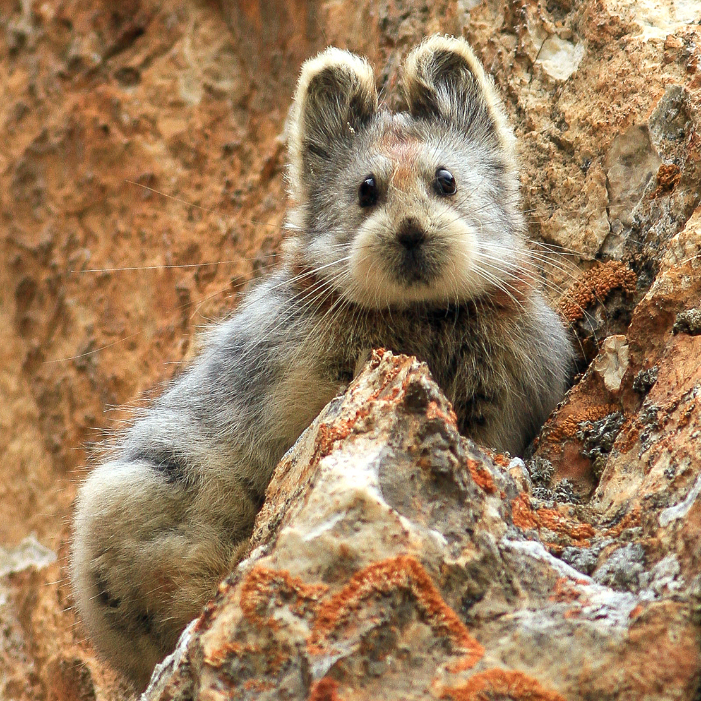

Discovery
The Ili Pika was first photographed in 2014 for the first time in more than 20
years. Li Weidong discovered the pika in 1983 and named it after its hometown Ili.
However, it wasn't known because it wasn't photographed until 2014 when Li spotted
and photographed the creature for the first time sine the early 1990s. Li estimates
that the numbers have declined 70% since its discovery.
The Ili pika, a tiny emountain-dwelling mammal with a teddy bear face eluded
scientists in the Tianshan Mountains of northwestern China. Only a handful of
people have seen this creature since it was discovered.
What is an Ili Pika?
The animal is about 8 inches long with large ears and several brown spots in its gray fur. The Ili pika lives on sloping bare rock races and feeds on grasses at high elevations. Similar to other high-dwelling creatures, the pikas are sensitive to changes in its environment.
Conservation
Grazing pressure from livestock and air pollution have contributed ot he decline
in the Ili pika which the International Union for Conservation considers to be
vulnerable to extinction. Additionally, Li believes that the pikas are forced to
gradually retreat to mountain tops due to the rising temperatures, from climate change.
The Ili Pikas have adapted to the cold. Li adds that the Ili Pikas have nowhere
else to retreat making them endangered. The Ili Pikas population decline is thought
to have been human's fault because people who live on pastor land have their sheep
and horse graze on alpine vegetation at higher altitudes which is competing with
the Ili Pikas. He adds that this species of pikas are not as vocal, so if a predators
was to come, then the Ili Pikas would not be able to alert each other. He continues
to mention that disease may also be a factor in this decline.
The team of
scientists calculated that there was 2,000 Ili Pikas in 2003, down from 2,900 in
1983-1993 readings. Now there are only 1,000 left in the wild. As of 2016, the Ili
Pika was not included on China's List of Wildlife under Special State Protection.
They are now considered to be rarer than pandas and this is saying
something! As of July 2015, there was no official organization or team
dedicated to studying or protecting the Ili Pika. Li, who discovered the Ili Pika,
says, "If it becomes extinct in front of me, I'll feel so guilty."
The case calls for the most extreme conservation measures, however
since they are rarely spotted, it is hard to help the cause other than donating money
towards research and creating awareness.